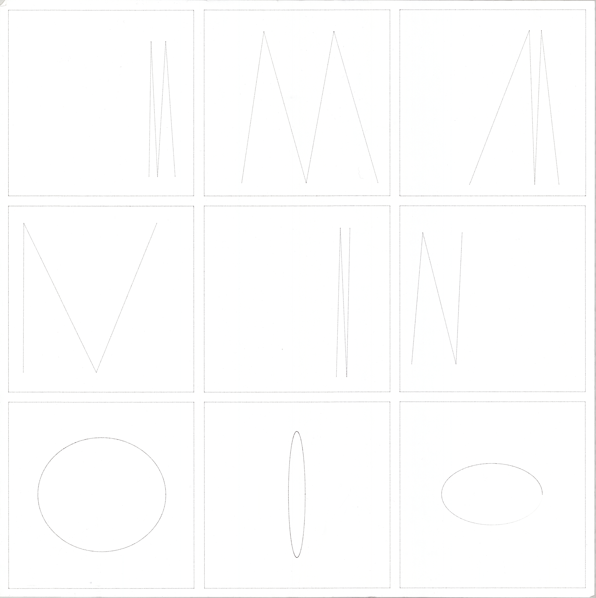
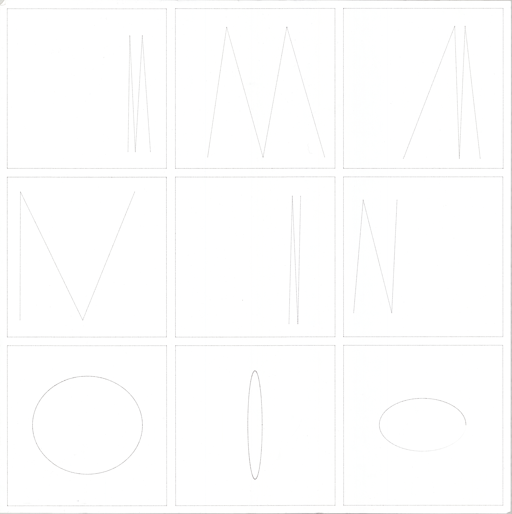
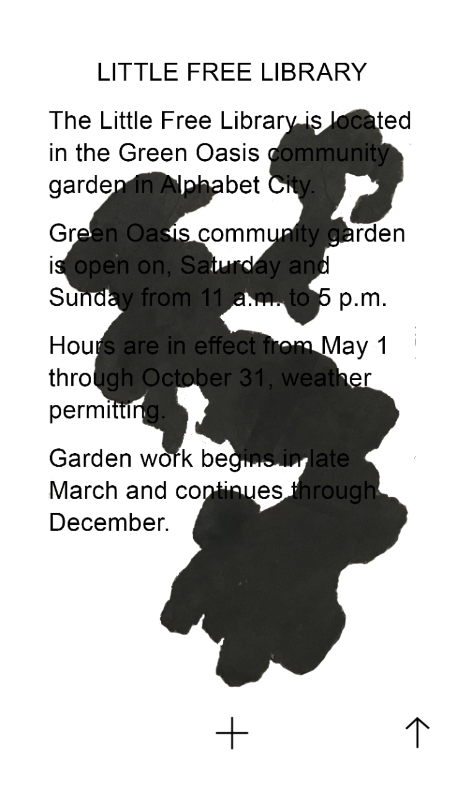
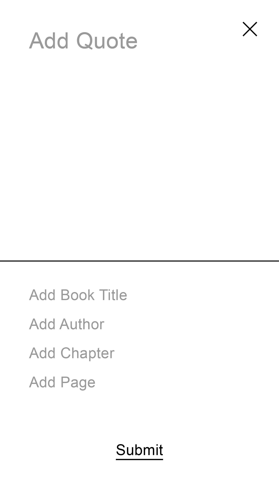
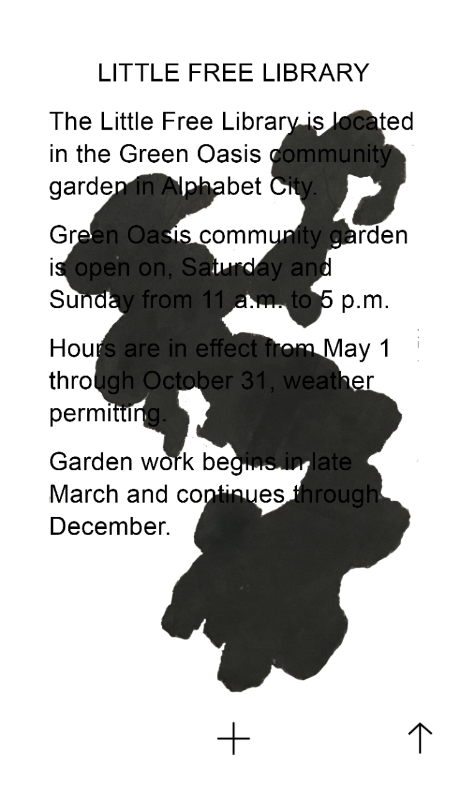
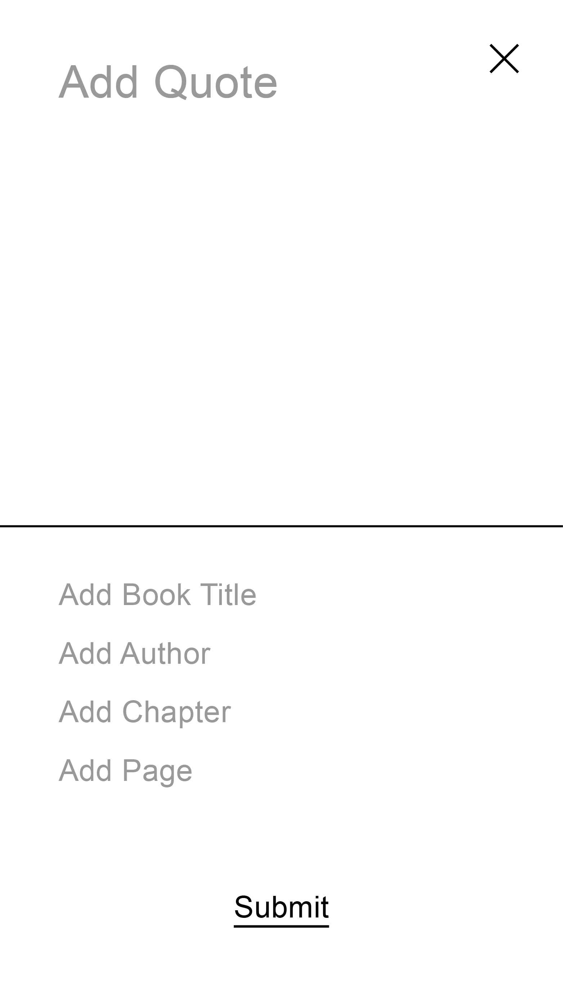
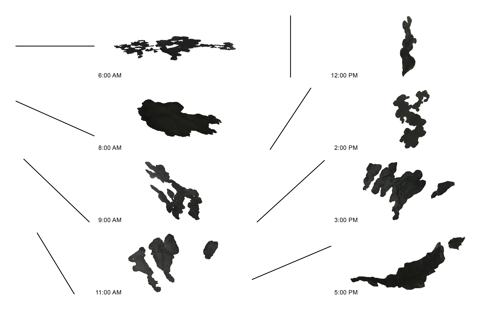
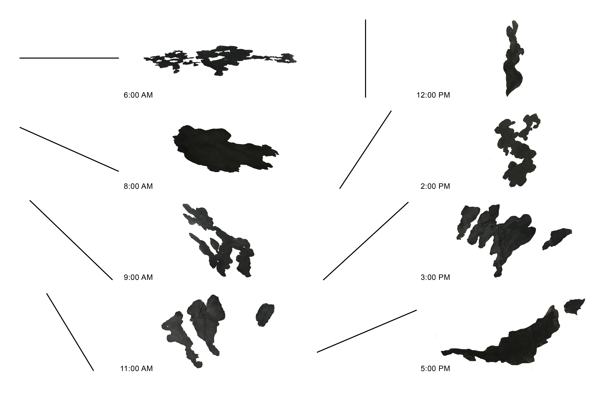

Variations 1 explores the possibilities of instruction-based methods in both image-making and typography. Extending the concept of rule-based art to the program, Variations 1 questions whether a set of instructions executed in code can produce unexpected and poetic results.
Nine twitter bots create and post images that respond to their individualized sets of instructions. These instructions define a range of compositions consisting of circles on a white square canvas. Similarly, a tenth twitter bot generates single-line letterforms on a white square canvas. The outputs from the twitter bots are then sequentially placed into a grid to be drawn with a pen plotter as physical documentation. See twitter bots See pen plotter lines


 



An app for collecting quotes from books found in the Little Free Library of the Green Oasis community garden. The app creates a collectively curated selection of quotes from books that may or may not still be in the library.
When reading a book in the physical space, shadows are cast on the book from the readers hands and body, over the course of the day. The app incorporates this phenomenon as a visual layer linking the experience of the app to the experience of the Little Free Library. Depending on the time of day, when a user adds a quote, the quote is “stamped” with a unique shadow image from the Green Oasis Garden. Prototype User Test Presentation

 



 

Matter is an online publication and research project centered on the themes of media and memory. The site acts as a catalogue of ideas that explore these themes; such as archiving, collective memory, and memory in the digital age. Each article on the site has a programmed expiration date and fades away until it is erased, reflecting the non-permanence of human memory. Matter
RGB Area translates a users location into a color by converting the longitude, latitude, and altitude into red, green, and blue values. All locations viewed are archived on the site. Locations represented: New York, Las Vegas, and Moscow. rgb-area.tk

Two mircosites made in Reading without Pages, a class about the design of publications online. Students spent one week preparing a coding demo and one week redesigning an article.
1 — An instructional site for CSS Grids that is structured within a series of nested grids. Users can toggle the visibility of black gridlines that describe the architecture of the page. CSS Grids Demo
2 — Alternate reading experience for “Something is Wrong on the Internet” by James Bridle cuts and remixes the article in a similar way the videos he writes about remix TV show footage. Something is Wrong on the Internet

Sidebar is a publication about internet culture. The journal features theory, personal stories, poetry, and fine art centered on the theme of the internet. Related articles are featured at the end of each article, encouraging the reader to experience the book in a non-linear fashion.